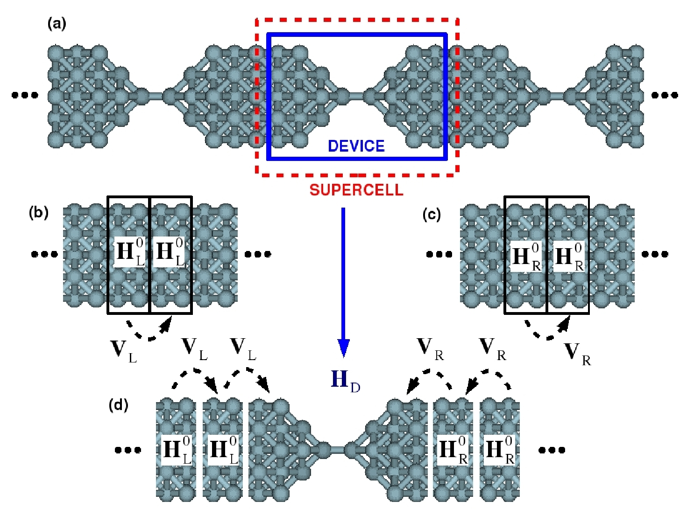

Atomistic NanoTransport
Ant 1D

ANT.1D makes use of a pre-computed Hamiltonian for the scattering section and for the disorder-free regions. It can thus be used with tight-binding parametrized models or as a post-processing procedure to a one-dimensional periodic boundary conditions self-consistent electronic structure calculation using, e.g., CRYSTAL or SIESTA codes.

Basic functionality:
- Spin-resolved coherent transmission spectrum and eigenchannel transmissions.
- Density of states and projected density of states on selected atomic orbitals.
- Charge and spin Mulliken population analysis. Additional features:
Advanced features:
Correlated electronic transmission function taking into account electronic interaction self-energy.
-
Interface to NCA and OCA impurity solvers for calculating electronic self-energy.
- Dynamical Mean-Field Theory for nanoscopic conductors.